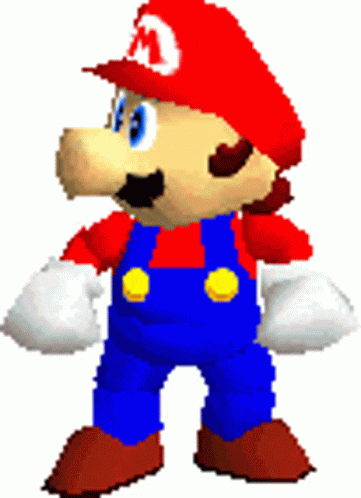

S u p e r M a r i o 64

Super Mario 64 is een 3D action adventure platformspel gemaakt en gepubliceerd door Nintendo. Het spel werd voor het eerst uitgebracht in 1996 in Japan en Noord Amerika. Het spel werd een jaar later in 1997 uitgebracht in Europa en Australië. Het spel werd uitgebracht op de Nintendo 64 en is het eerste 3D Mario spel in de beroemde Mario serie.
De hoofdrolspeler in het spel is natuurlijk de welbekende Mario! Mario moet Princess Peach redden van de kwaadaardige Bowser, die haar gevangen heeft genomen in haar eigen kasteel. Om Princess Peach te redden moet Mario door verschillende werelden en levels reizen en sterren verzamelen. Mario komt in deze levels en werelden door schilderijen in het kasteel van Princess Peach te betreden.
De twee meest voorkomende vijanden in het spel zijn de Goomba en de Koopa Troopa. De Goomba is een kleine bruine paddenstoelachtige vijand. De Goomba is erg makkelijk te verslaan, Mario hoeft er alleen maar op te springen. De Koopa Troopa is een schildpadachtige vijand. De Koopa Troopa is iets moeilijker te verslaan dan de Goomba. Als Mario op de Koopa Troopa springt vliegt de Koopa Troopa uit zijn schild en kan Mario de Koopa Troopa verslaan en het schild gebruiken als wapen.
L o c a t i e s i n d e g a m e
Aan het begin van het spel springt Mario uit een groen Warp Pipe en komt hij terecht in de tuin van het Mushroom Kasteel.